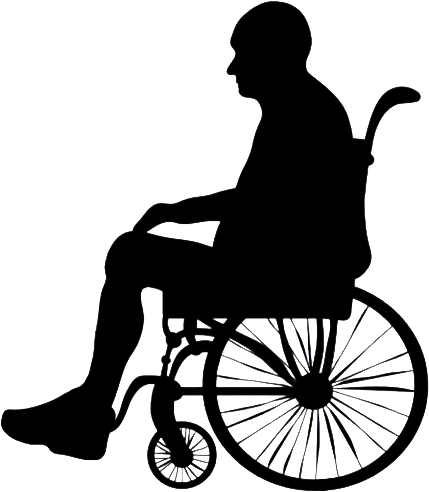

霜 髻 忧 恙
岁月如梭，老年生活常伴慢性病的挑战。关节的不适、视力的减退、偶尔的跌倒，
都是时间留下的痕迹。在这个年纪，高血压、糖尿病等慢性病更是常见，
它们不仅影响着老人的日常生活，也牵绊着家人的心。关注老年人的健康管理，
就是给予他们最温暖的关怀。
-
高血压： 高血压的患病率高达58.3%，成为最常见的慢性疾病之一。
-
糖尿病： 约有1/5的老年人（19.4%）受到糖尿病的困扰，影响他们的日常生活和健康管理。
-
高胆固醇血症： 10.5%的老年人存在高胆固醇血症问题，这一比例不容忽视。
-
多病共存： 超过3/4（75.8%）的老年居民面临多种慢性病的共同威胁，这增加了他们的健康风险和管理难度。
-
对于70岁及以上居民：
在这一年龄段，心脑血管疾病、癌症和慢性阻塞性肺疾病（COPD）是导致伤残调整寿命年的主要疾病，分别占39.11%、15.40%和10.48%。
-
阿尔茨海默病：
在中国老年人群中的患病率约为5%，而在85岁以上的高龄老人中，这一比例可能高上升至25%以上，目前患者总数已达900万，且随着老龄化的加剧，这一数字预计将显著上升。
-
帕金森病：
其发病率相对较低，但同样不容忽视。据统计，中国的帕金森病患者人数已超过300万，占全球患者总数的近三分之一。随着人口老龄化，预计每年将新增超过10万名帕金森病患者。
-
老龄化与慢性病挑战：
老龄化推动了慢性病患病率的上升，高血压、糖尿病、癌症等疾病成为新的健康威胁，反映了中国疾病谱从传染病向非传染性疾病的转变。到2030年，慢性非传染性疾病的患病率预计将增长40%以上，且八成60岁以上老年人的死亡将与这些慢性病相关。

高血压
现状： 高血压是全球范围内普遍存在的公共卫生问题，尤其在老年人群中更为普遍。
随着年龄的增长，血管弹性逐渐降低，血管阻力增加，导致血压升高。
症状表现： 高血压初期可能没有明显症状，但随着病情的发展，
可能出现头痛、眩晕、心悸、疲劳等症状。
长期的高血压还可能导致心脏病、中风、肾脏疾病等严重并发症。
患病率高达58.3%
<<<查看更多>>>
糖尿病
现状： 糖尿病是一种以高血糖为特征的代谢性疾病，
老年人由于胰岛素抵抗性增加，更容易发展为2型糖尿病。
随着人口老龄化和生活方式的变化，老年糖尿病的发病率逐年上升。
症状表现： 糖尿病的典型症状包括多饮、多尿、多食和体重下降。
老年糖尿病患者可能症状不明显，但长期高血糖会损害血管和神经，
导致心血管疾病、肾病、视网膜病变等并发症。
<<<查看更多>>>
高胆固醇血症
现状： 高胆固醇血症是指血液中胆固醇含量过高，老年人由于代谢能力下降，
更容易出现血脂异常。高胆固醇血症是心血管疾病的重要危险因素，需要引起足够重视。
症状表现： 高胆固醇血症通常没有明显的症状，
很多时候是在体检或因其他原因就诊时被发现。高水平的胆固醇可能在血管壁形成斑块，
导致动脉硬化，增加心脏病和中风的风险。
<<<查看更多>>>
数据来源：《老年健康蓝皮书 中国老年健康研究报告（20202021）》（本网页中简称《报告》）、
中国老年人群慢性病患病状况和疾病负担研究《中国老年人群慢性病患病状况和疾病负担研究》、
WHO《中国老龄化与健康国家评估报告》